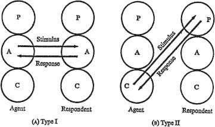
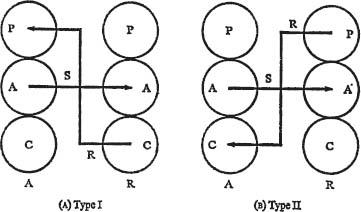
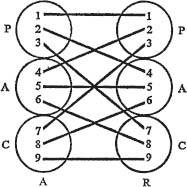
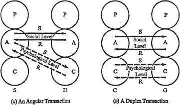

2 · Transactional Analysis
THE unit of social intercourse is called a transaction. If two or more people encounter each other in a social aggregation, sooner or later one of them will speak, or give some other indication of acknowledging the presence of the others. This is called the transactional stimulus. Another person will then say or do something which is in some way related to this stimulus, and that is called the transactional response. Simple transactional analysis is concerned with diagnosing which ego state implemented the transactional stimulus, and which one executed the transactional response. The simplest transactions are those in which both stimulus and response arise from the Adults of the parties concerned. The agent, estimating from the data before him that a scalpel is now the instrument of choice, holds out his hand. The respondent appraises this gesture correctly, estimates the forces and distances involved, and places the handle of the scalpel exactly where the surgeon expects it. Next in simplicity are Child-Parent transactions. The fevered child asks for a glass of water, and the nurturing mother brings it.
Both these transactions are complementary; that is, the response is appropriate and expected and follows the natural order of healthy human relationships. The first, which is classified as Complementary Transaction Type I, is represented in Figure 2A. The second, Complementary Transaction Type II, is shown in Figure 2B. It is evident, however, that transactions tend to proceed in chains, so that each response is in turn a stimulus. The first rule of communication is that communication will proceed smoothly as long as transactions are complementary; and its corollary is that as long as transactions are complementary, communication can, in principle, proceed indefinitely. These rules are independent of the nature and content of the transactions; they are based entirely on the direction of the vectors involved. As long as the transactions are complementary, it is irrelevant to the rule whether two people are engaging in critical gossip (Parent-Parent), solving a problem (Adult-Adult), or playing together (Child-Child or Parent-Child).
The converse rule is that communication is broken off when a crossed transaction occurs. The most common crossed transaction, and the one which causes and always has caused most of the social difficulties in the world, whether in marriage, love, friendship, or work, is represented in Figure 3A as Crossed Transaction Type I. This type of transaction is the principal concern of psychotherapists and is typified by the classical transference reaction of psychoanalysis. The stimulus is Adult-Adult: e.g., ‘Maybe we should find out why you’ve been drinking more lately,’ or, ‘Do you know where my cuff links are?’ The appropriate Adult-Adult response in each case would be: ‘Maybe we should. I’d certainly like to know!’ or, ‘On the desk.’ If the respondent flares up, however, the responses will be something like ‘You’re always criticizing me, just like my father did,’ or, ‘You always blame me for everything.’ These are both Child-Parent responses, and as the transactional diagram shows, the vectors cross. In such cases the Adult problems about drinking or cuff links must be suspended until the vectors can be realigned. This may take anywhere from several months in the drinking example to a few seconds in the case of the cuff links. Either the agent must become Parental as a complement to the respondent’s suddenly activated Child, or the respondent’s Adult must be reactivated as a complement to the agent’s Adult. If the maid rebels during a discussion of dishwashing, the Adult-Adult conversation about dishes is finished; there can only ensue either a Child-Parent discourse, or a discussion of a different Adult subject, namely her continued employment.

Figure 2. Complementary Transactions
The converse of Crossed Transaction Type I is illustrated in Figure 3B. This is the counter-transference reaction familiar to psychotherapists, in which the patient makes an objective, Adult observation, and the therapist crosses the vectors by responding like a parent talking to a child. This is Crossed Transaction Type II. In everyday life, ‘Do you know where my cuff links are?’ may elicit: ‘Why don’t you keep track of your own things? You’re not a child any more.’

Figure 3. Crossed Transactions
The relationship diagram in Figure 4, showing the nine possible vectors of social action between an agent and a respondent, has some interesting geometrical (topological) qualities. Complementary transactions between ‘psychological equals’ are represented by (1–1)2, (5–5)2 and (9–9)2. There are three other complementary transactions: (2–4) (4–2), (3–7) (7–3) and (6–8) (8–6). All other combinations form crossed transactions, and in most cases these show up as crossings in the diagram: e.g., (3–7) (3–7), which results in two speechless people glaring at each other. If neither of them gives way, communication is finished and they must part. The most common solutions are for one to yield and take (7–3), which results in a game of ‘Uproar’; or better, (5–5)2, in which case they both burst out laughing or shake hands.
Simple complementary transactions most commonly occur in superficial working and social relationships, and these are easily disturbed by simple crossed transactions. In fact a superficial relationship may be defined as one which is confined to simple complementary transactions. Such relationships occur in activities, rituals and pastimes. More complex are ulterior transactions – those involving the activity of more than two ego states simultaneously – and this category is the basis for games. Salesmen are particularly adept at angular transactions, those involving three ego states. A crude but dramatic example of a sales game is illustrated in the following exchange:

Figure 4. A Relationship Diagram
Salesman: ‘This one is better, but you can’t afford it.’
Housewife: ‘That’s the one I’ll take.’
The analysis of this transaction is shown in Figure 5A. The salesman, as Adult, states two objective facts: ‘This one is better’ and ‘You can’t afford it’. At the ostensible, or social, level these are directed to the Adult of the housewife, whose Adult reply would be: ‘You are correct on both counts.’ However, the ulterior, or psychological, vector is directed by the well-trained and experienced Adult of the salesman to the housewife’s Child. The correctness of his judgement is demonstrated by the Child’s reply, which says in effect: ‘Regardless of the financial consequences, I’ll show that arrogant fellow I’m as good as any of his customers.’ At both levels the transaction is complementary, since her reply is accepted at face value as an Adult purchasing contract.

Figure 5. Ulterior Transactions
A duplex ulterior transaction involves four ego states, and is commonly seen in flirtation games.
Cowboy: ‘Come and see the barn.’
Visitor: ‘I’ve loved barns ever since I was a little girl.’
As shown in Figure 5B, at the social level this is an Adult conversation about barns, and at the psychological level it is a Child conversation about sex play. On the surface the Adult seems to have the initiative, but as in most games, the outcome is determined by the Child, and the participants may be in for a surprise.
Transactions may be classified, then, as complementary or crossed, simple or ulterior, and ulterior transactions may be subdivided into angular and duplex types.